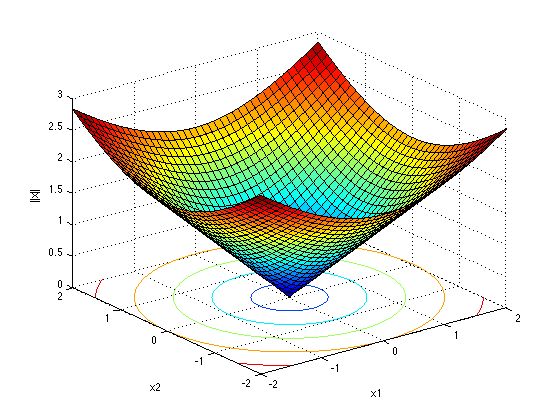
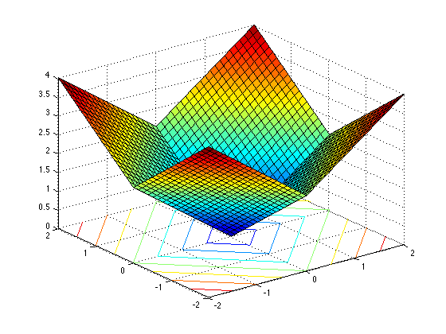
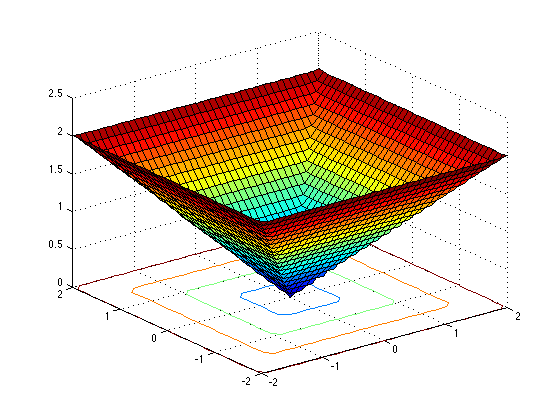
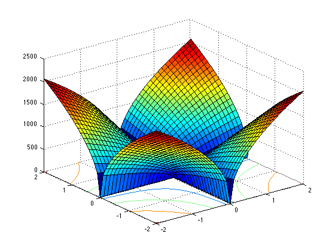

Contents
- Daniel Volz, Homework Assignment 02, ELEC 542, Spring 2015
- Plots of different lp norms of vectors in R2
- Set up the meshgrid that has the samples of x1 and x2 we will use.
- We will generate four plots corresponding to different lp norms:
- The plot of p = 2: the l2 norm is the Euclidean norm of x
- The plot of p = 1: the l1 norm is the taxicab or Manhattan norm of x
- The plot of p = 'a bigger number': approximating an linfinity norm or Chebyshev norm of x
- The plot of p = 0.1
function [ output_args ] = lp_norms_in_3D_partial( input_args )
Daniel Volz, Homework Assignment 02, ELEC 542, Spring 2015
Plots of different lp norms of vectors in R2
Lots of times, the high dimensional spaces we work in are hard to visualize. But this assignment helps with that visualization. By making our vectors live in a two dimensional space, we can use the third dimension to plot things like the value a function takes over two dimensions.
In this case, we are looking at the different norms over a two dimensional space. Let say that we are in R2 and our dimensions are x1 and x2. In other words x = [x1 x2]. We use the general lp norm we saw in class. In Matlab we can express this norm as follows:
||x|| = normOfx = ( abs(x1).^p + abs(x2).^p ).^(1/p)
You should consult the class notes and verify for yourself that this does in fact correspond to the lp norm in R2. We can selection different norms by varying the value of p.
The Matlab function surfc() is used to do the plot. surfc() has the nice feature of showing us the 3D surface of |x| as well as the contour plots in the x1 x2 plane. The contour plot let's us see the unit circles and smaller and larger versions of them as well.
If this is your first time to plot things in 3D in Matlab, this is a good starting example. We use the function meshgrid() to generate a grid of points which are returned to us in x1 and x2. Any corresponding values in x1 and x2, for example x1(3) and x2(3) define a point in R3. So, we calculate the norm of x i.e. normOfx at all of these points.
Note of thanks: I (Ray) appreciate the feedback from you (the class) on this assignment. It helped me pull this together quickly and it worked surprisingly well. I bet that you will find it goes pretty smoothly for you too. Good luck!
Set up the meshgrid that has the samples of x1 and x2 we will use.
[x1, x2] = meshgrid(-2 : 0.1 : 2, -2 : 0.1 : 2);
We will generate four plots corresponding to different lp norms:
p = 2 The standard l2 norm of x.
p = 1 The l1 norm of x.
p = 'a bigger number' Approximating the linfinity norm of x.
p = 0.1 An option for you to pick one of your own. Pseudo inverses i.e.
p < 1 are acceptable.The plot of p = 2: the l2 norm is the Euclidean norm of x
p = 2; normOfx = (abs(x1).^p + abs(x2).^p).^(1/p); % Calculate the norm. figure surfc(x1, x2, normOfx); % Label the axes... xlabel('x1'); ylabel('x2'); zlabel('||x||');
The plot of p = 1: the l1 norm is the taxicab or Manhattan norm of x
p = 1;
normOfx = (abs(x1).^p + abs(x2).^p).^(1/p); % Calculate the norm.
figure
surfc(x1, x2, normOfx);
 The plot of p = 'a bigger number': approximating an linfinity norm or Chebyshev norm of x
p = 100;
normOfx = (abs(x1).^p + abs(x2).^p).^(1/p); % Calculate the norm.
figure
surfc(x1, x2, normOfx);
 The plot of p = 0.1
p = 0.1;
normOfx = (abs(x1).^p + abs(x2).^p).^(1/p); % Calculate the norm.
figure
surfc(x1, x2, normOfx);
 end